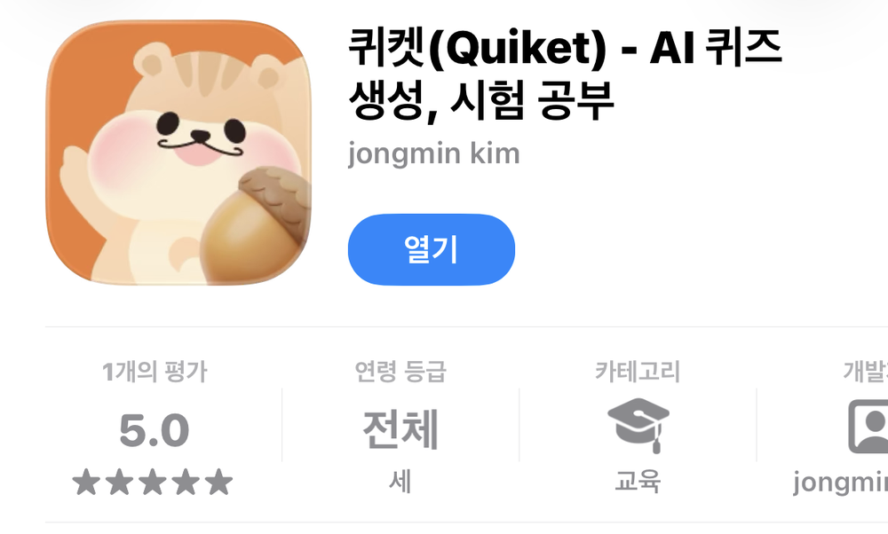

장인우서비스 기획 · IT 기획 · AX
현장을 직접 해 보고
규칙으로 만드는 서비스 기획자
- 도메인을 알려고 거래처 30곳의 기장을 직접 한 서비스 기획자입니다.
- 주문 연동에서 ‘주문’과 ‘박스’의 단위 차이를 찾아 담당자 수기 입력을 하루 1시간에서 10분으로 줄였습니다.
- 배포 후에도 쓰이지 않던 급여 기능을 쓰이게 만들었고, 지금은 RAG·Tool Calling으로 AI 서비스를 직접 구현합니다.
대표 프로젝트
전체 프로젝트 18개-
약 1시간 → 10분담당자 주문 수기 입력(하루) · 본인 확인 기록
실무 · 지킴컴퍼니 · 2026.01 – 02운영 적용
의약품 도매몰 주문·박스 상태 연동
주문 단위와 박스 단위의 차이를 연동 정책으로 정리하고, 양쪽 데이터를 대조해 오류 두 가지를 찾아 전달했습니다.
본인: 연동 정책 기획·데이터 대조 · 구현: 개발팀
-
쓰이지 않던 기능을 실제 사용까지계산 기준 재정의 · 담당자 교육
실무 · 지킴컴퍼니 · 2025.12 – 2026.05내부 사용 · 시범 운영
급여명세서 서비스 기획
위하고 결과와 계산식을 대조하고 Apps Script 기준 코드로 전달했습니다. 설명·가이드 후 실제 급여 계산에 쓰이기 시작했습니다.
본인: 계산 기준·정책·화면 기획 · 구현: 개발팀
-

사이드 프로젝트 · 7인 팀 · 2026.03 – 07출시 후 운영 중단
퀴켓 — AI 퀴즈 학습 앱
미니 버전으로 문항 수 기준을 먼저 정하고, MoSCoW로 첫 출시 범위를 조율해 App Store·Google Play에 출시했습니다(팀 결과).
본인: PM·기획 · 정식 앱 구현: 개발팀
일하는 방식
How I Work 전체 읽기기획
업무를 직접 해 보고 문제를 찾습니다. 기장 30곳, 원격지원, 담당자 관찰에서 시작한 기획이 많습니다.
02개발
스펙을 태스크 6항목으로 먼저 정하고, AI 코딩 도구로 구현한 뒤 화면과 테스트로 확인합니다.
03협업
디자이너·개발자·현업마다 필요한 정보로 넘기고, 실제로 쓰일 때까지 확인합니다.
“구현 중에 판단해야 할 것들이 문서에 정리되어 있어 편하다.”
지킴컴퍼니에서 함께 일한 개발자와 디자이너
Dev Notes
전체 노트- 2026.11.06
Docker 이미지와 컨테이너의 차이
이미지는 실행 전의 읽기 전용 틀, 컨테이너는 그 틀로 띄운 실행 단위. 개념과 기본 명령.
- 2026.11.06
MCP 기본 개념
호스트·클라이언트·서버의 구성과 서버가 제공하는 세 가지 기능.
- 2026.11.06
VS Code 활용 팁
자주 쓰는 기본 단축키와 설정. macOS 기본 키 배열 기준.
함께 이야기 나누고 싶습니다
서비스 기획 · IT 기획 · AX 직무로 연락 주시면 빠르게 답장드리겠습니다.